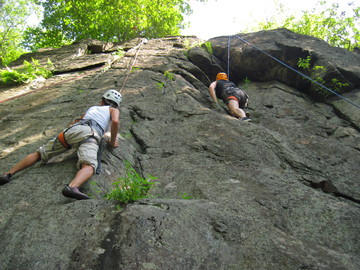
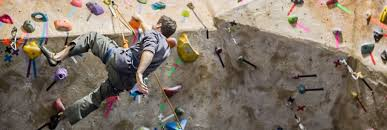

Welcome to the Home of New Jersey Rock Climbing!

This web page is a place that anyone interested in rock climbing in
New Jersey can come to find information they need to enjoy this pasttime.
Provided is information for experienced climbers as well as people who
are interested in getting started with rock climing. There are also pages
that will link you to New Jersey rock climibng gyms, and have descriptions
of famous outdoor climbing spots. We also have a page that new climbers can
find a camp or lessons to improve their craft.
We hope that our site will help you have a more enjoyable experince with your rock climbing in New
Jersey!
